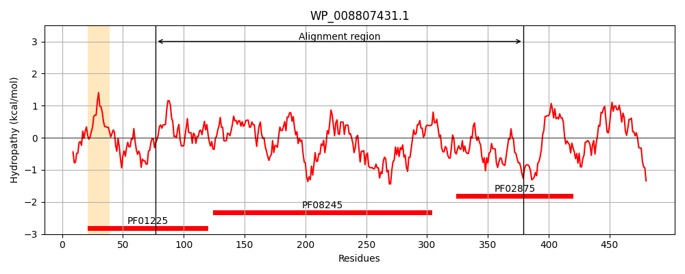
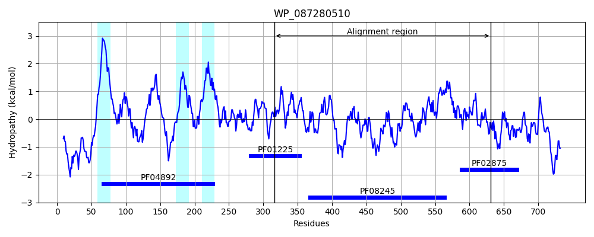
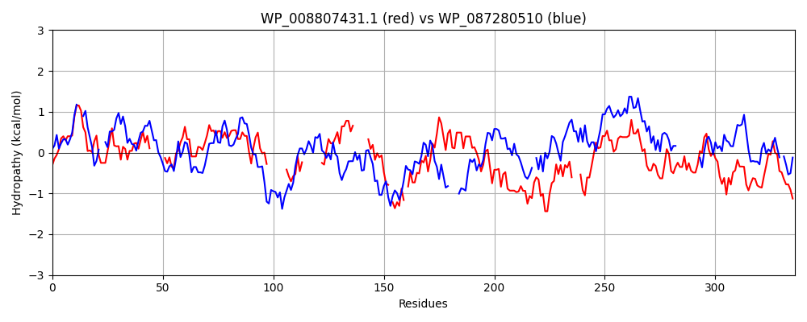

Hit Accession: WP_087280510
Hit TCID: 2.A.128.2.3
Hit Description: gnl|BL_ORD_ID|21541 gnl|TC-DB|WP_087280510.1|2.A.128.2.3 UDP-N-acetylmuramoyl-L-alanyl-D-glutamate--2,6-diaminopimelate ligase [Eubacterium sp. An3]
Mach Len: 336
e:0.000000
Query TMS Count : 1
Hit TMS Count: 3
TMS-Overlap Score: 0.000000
Predicted Substrates:None
BLAST Alignment:
Score: 136 , Bit scores: 56 bits, E-value: 1.3e-08, Alignment length: 336, Percentage identity: 25
Query: 77 RDASVVVVSSAISADNPEIVAAHEARIPVIRRAEMLAELMRFRHG------IAIAGTHGKTTTTAMVSSIYAEAGLDPTFVNGGLVKAAGVHARLGHS--------RYLIAEAD--------ESDASFLHLQPMVAI------VTNIEADHMD-TYHGDF-ENLKQTFINFLHNLPFYGRAVMCVDDPVIRELLPRVGRQITTYGFSDDADVRVEDYRQLGAQGHFRLVRQDKEIL---QVTLNAPGRHNALNAAAAVAVATEEGIDDQAILRALESFQGTGRRFDFLGEFPLAEVNGKPGSAMLIDDYGHHPTEVDATIKAARAGWPDKNLVMLF 379
+ A+V++V + D PE V ++ R A L F H IA+ GT GKTTTT M+ ++ +AG + V H + ++ RY D E+ + L I TN+ DH+ H DF E L + F + +DD E+ + + T+G ++ AD+R ++ L F V D L +V+ PG N NA A+ VA E G D I L++F GR ++ LI DY H+ +++ +K R P + L+ LF
Sbjct: 316 KGAAVLLVEDPV--DVPETVTV--IQVESTRYAMALVSAAWFGHPAKELTTIAVTGTKGKTTTTYMIQALLEKAGHKTGVIGTIEVVIGDKHIAVNNTTPESYDIHRYFREMVDAGCDAVVMEASSQGFKLDRTAGIEFDYGLFTNLSPDHIGPNEHKDFAEYLSCKAMLFTQCKKGFAN----LDDEHFEEITAKAVCPVQTFGLAEGADLRAQNIT-LTRDTDFLGVDFDVSGLLNGRVSCGVPGTFNVHNALGAICVALEMGADLSMINEVLKTFTVKGR----------VQIIPTGYDYTLIVDYAHNAVALESILKTLREYHPAR-LISLF 631 | Protein Hydropathy Plots: |
|---|
|  |  |
Pairwise Alignment-Hydropathy Plot:
|
|---|
|  |